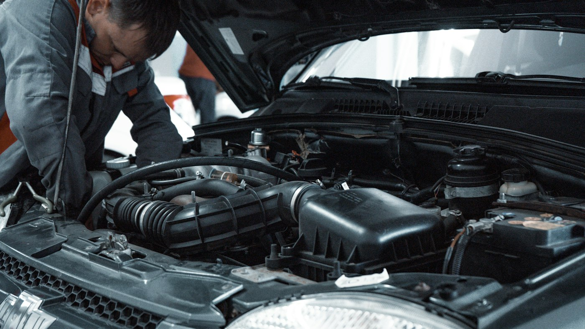
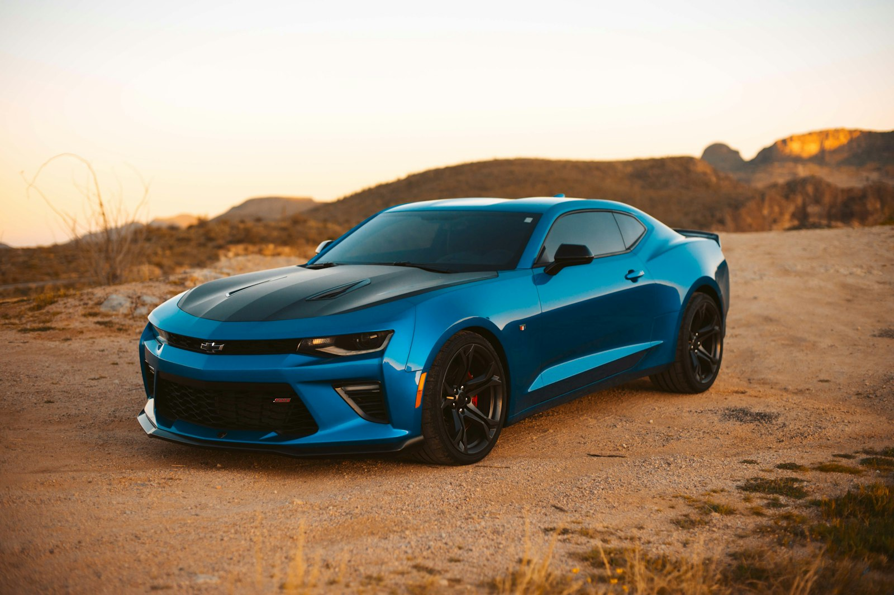

Driveway / open-air risks
Windblown dust, pollen, uneven temperature, and humidity swings can interrupt flash and cure. That’s fine for a quick wax — not ideal when you’re investing in a multi-year ceramic system.
Great ceramic coating is mostly prep — and a proper cure. Here’s how Leesburg ceramic coating specialists deliver lasting results with controlled-environment curing instead of a typical driveway mobile install.
Our quality differentiator vs. spray-and-go driveway mobile installs.
Windblown dust, pollen, uneven temperature, and humidity swings can interrupt flash and cure. That’s fine for a quick wax — not ideal when you’re investing in a multi-year ceramic system.
When quality requires it, we book into a controlled bay so application and cure happen in stable conditions. Coatings can be installed to manufacturer standards with warranty registration when the system supports it. Soft brand details stay on the call — the website stays Leesburg Ceramic Coating.
We evaluate paint condition, existing swirls or oxidation, and how you use the vehicle. That drives year-tier package recommendation (~2–3 / 5–6 / 8–10 yr) and correction level.
A thorough wash removes loose dirt. Chemical and mechanical decontamination clear bonded contaminants so the surface is ready for correction and coating.

Light polish or multi-stage paint correction as needed to reduce swirls and refine clarity — matching Essential, Premium, or Ultimate goals before ceramic locks the finish in.

Professional ceramic is applied in controlled sections for even coverage and strong bonding to prepared paint — not rushed outdoor panel work in open air.
Proper cure time in suitable conditions, a final check, and a clear aftercare guide so you know how to wash and maintain hydrophobic performance for the full year-tier life of your system.
Quick answers — then Call Now or request a Free Quote.
Longevity depends on the system, prep quality, and how you maintain it. Our packages use transparent year-tier language — roughly 2–3, 5–6, and 8–10 year systems — and we’ll recommend based on your goals at quote time. Call (703) 643-9130 or request a free quote to match a package to your paint.
No. Wax sits on the surface and wears off relatively quickly. Ceramic coatings form a harder, longer-lasting protective layer with stronger gloss and hydrophobic behavior when properly applied over corrected paint. Ready to compare options for your car? Call Now or get a Free Quote.
Quality is the priority. When the system and conditions require it, we use controlled-environment curing in a Loudoun/Ashburn bay — not a typical driveway mobile install where wind, dust, and temperature swings can compromise the bond. Call (703) 643-9130 or request a free quote and we’ll confirm the right setup for your vehicle.
Often yes if you have swirls, haze, or oxidation — ceramic locks in what’s underneath. We assess during the paint check and only recommend the correction level your finish needs. Call Now or get a Free Quote to schedule an assessment. Learn more on our paint correction page.
Call us — we’re happy to walk through what your paint needs before you commit.